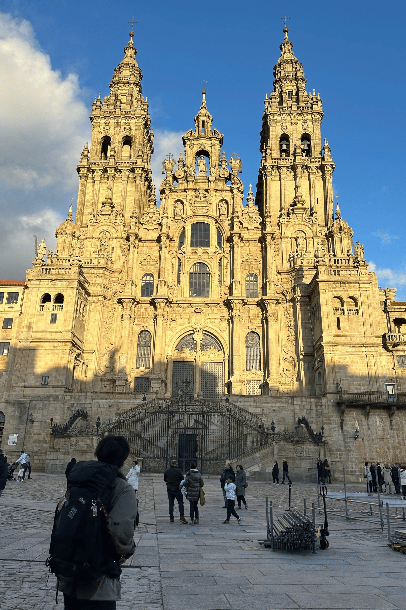
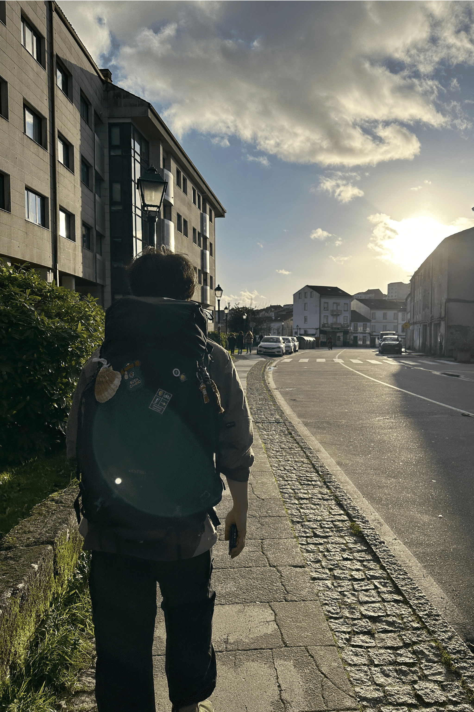
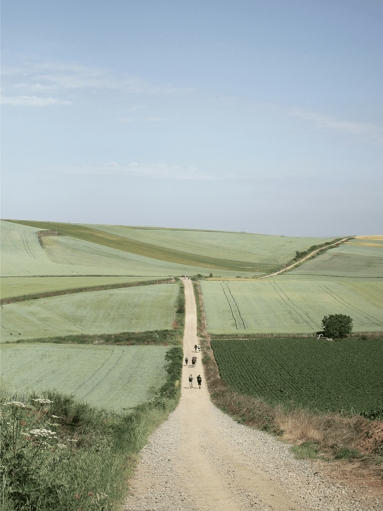

-
까미노메이트는
산티아고 순례길을 시작하는 모든 분들의
든든한 동반자입니다.
이후 수많은 여행자들과 함께 순례길을 걸으며, 각자의 이야기가 길 위에서 다시 시작되는 순간을 지켜보고 있습니다.
회원(여행자) 간의 신뢰와 동행의 가치를 소중히 여기며, 안전하고 진정성 있는 순례 문화를 만들어 가는 것을 목표로 합니다.
자세히 보기 -


-

-
OFFLINE CLASS
산티아고 순례길이 처음이라면,
오프라인 설명회에서 먼저 만나보세요.출발 전 준비해야 할 여권, 항공권, 숙소, 짐 꾸리기까지 순례길을 다녀온 가이드가 직접 한 번에 정리해 드립니다.
실제 동선과 난이도, 비용, 계절별 추천 코스까지 인터넷 정보만으로는 알기 어려운 현실적인 이야기들을 작은 인원으로 편하게 질문하며 들어보세요.
설명회 신청하기
순례길 코스
같은 산티아고라도 출발 도시와 풍경, 리듬이 모두 다릅니다.
까미노메이트가 직접 걷고 정리한 대표 4가지 코스를 한 곳에서 비교해 보세요.
- 프랑스길
- 포르투갈길
- 북쪽길
- 은의길
이런 분께 프랑스 길을 추천해요
- 처음 떠나는 순례길이라면, 가장 많은 순례자와 함께 걷고 싶은 분
- 마을·숙소·식당 등 인프라가 잘 갖춰진 길을 선호하는 분
- 유럽 작은 마을과 성당, 들판 풍경을 두루 경험하고 싶은 분
- “산티아고 하면 떠오르는 바로 그 길”을 걸어보고 싶은 분
이런 분께 포르투갈 길을 추천해요
- 리스본·포르투 등 도시 감성과 순례길을 함께 느끼고 싶은 분
- 바닷길·내륙길 중 내 스타일에 맞는 루트를 고르고 싶은 분
- 전체 거리는 부담스럽지만, 핵심 구간 위주로 걷고 싶은 분
- 와인, 해산물 등 미식의 즐거움도 놓치고 싶지 않은 분
이런 분께 북쪽 길을 추천해요
- 사람이 붐비지 않는, 비교적 한적한 루트를 찾는 분
- 바다·절벽·초원이 이어지는 다이내믹한 풍경을 좋아하는 분
- 조금은 도전적인 고도 변화도 괜찮다고 느끼는 분
- “조금 더 야성적인 순례길”을 경험해 보고 싶은 분
이런 분께 은의 길을 추천해요
- 조용하게 나만의 속도로 걷는 깊이 있는 순례를 꿈꾸는 분
- 세비야를 시작으로 다양한 기후와 풍경을 경험해 보고 싶은 분
- 역사와 이야기가 담긴 오래된 길에 끌리는 분
- 여유 있게 긴 일정으로 길 위의 시간을 보내고 싶은 분
까미노 자유일정 플랜 메이트
까미노 자유일정 플랜 메이트는 정해진 패키지가 아닌, 나에게 딱 맞는 순례 일정을 처음 상담부터 귀국까지 A–Z 전 과정에서 함께 설계하는 서비스입니다.
-
1:1 사전 상담
출발 가능 시기, 예산, 걷고 싶은 거리, 여행 스타일을
온라인/전화 상담으로 꼼꼼히 파악합니다. -
나만의 코스 설계
프랑스길·포르투갈길·북쪽길 중 나에게 맞는 코스를 고르고,
하루 걷는 거리와 휴식일을 포함한 세부 일정을 짜 드립니다. -
항공 · 교통 예약
출발지와 예산에 맞는 항공권, 순례길 입·출국 교통편을 일정에 맞춰
가장 효율적인 루트로 제안합니다. -
숙소 예약 & 리듬 조정
알베르게, 게스트하우스, 호텔 등 선호 숙소 타입에 맞춰 이동 동선과
휴식 리듬을 고려한 숙소를 예약해 드립니다. -
출발 전 오리엔테이션
짐 꾸리기, 현지 앱, 스탬프 찍는 법, 예산 계산까지 순례길에서
꼭 알아야 할 내용을 한 번에 정리해 드립니다. -
24h 현지 케어
일정 변경, 체력 저하, 예상치 못한 변수 상황에서 비상 연락망을 통해
일정 조정과 대안을 함께 찾습니다.
고객센터
평일 10:00 – 18:00
(주말/공휴일 카카오톡 상담)
010-0000-0000
hello@caminomate.com
까미노메이트 순례자를 위한
특별 혜택을 만나보세요.
후기 작성 / 추천인 등록 시 적용되는 시즌 한정 프로모션을 확인해 보세요.
맞춤여행 신청현황
더보기- 프랑스길 1인 자유일정 상담 2025-11-18
- 포르투갈 해안길 2인 동행 문의 2025-11-18
- 북쪽길 부분 구간 예약 요청 2025-11-17
- 은의길 장기 일정 설계 문의 2025-11-16